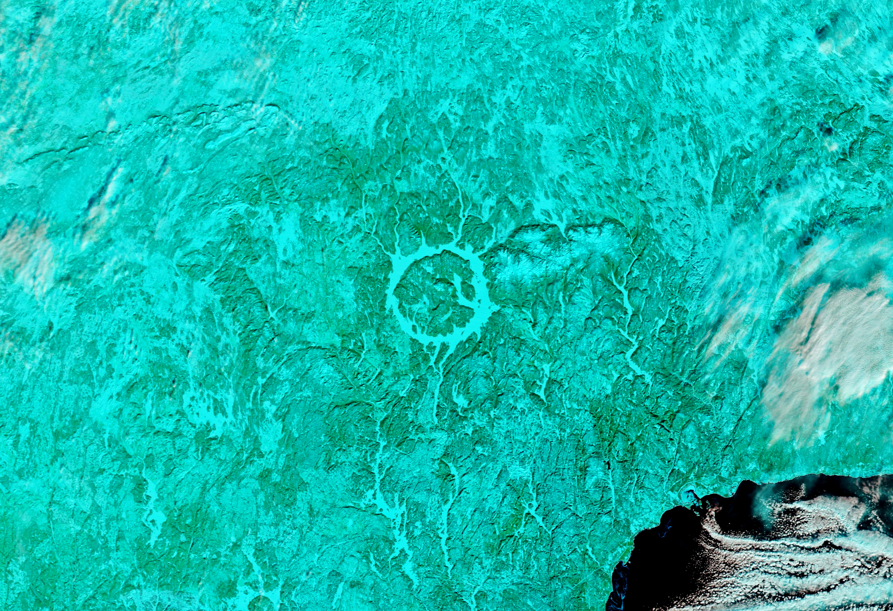

A Modern Lake in an Ancient Crater
Impact craters exist on every continent on Earth. While many have eroded away or been buried by geologic activity, some remain visible from the ground and from above. This week, we revisit stories featuring some of our most captivating satellite images of impact sites around the planet. The images and text on this page were originally published on February 4, 2022.
In southeastern Québec lies one of the world’s largest impact craters. Manicouagan Crater was formed 214 million years ago, near the end of the Triassic Period, when an asteroid 5 kilometers (3 miles) wide struck what is now Canada. Today, the remnants of the crater are made visible by water and, sometimes, ice.
These images of Manicouagan Lake were acquired by the MODIS (Moderate Resolution Imaging Spectroradiometer) on NASA’s Terra satellite on January 20, 2022. A natural-color image of the frozen lake is compared with a false-color image. In the false-color image, which uses MODIS bands 7-2-1, snow or ice appears electric blue and vegetation appears green. A blanket of snow covering the surrounding vegetation gives it a greenish-blue color.
Sometimes called the “Eye of Québec,” the 1,940-square-kilometer (750-square-mile) ring-shaped lake is readily identifiable from space. The unique shape makes it a popular feature in satellite imagery and a favorite subject of astronaut photography. Despite the crater’s ancient age, the events that gave rise to the lake coincided with the dawn of the Space Age.
In the 1960s, Hydro-Québec constructed the Daniel-Johnson Dam—the largest multiple arch-and-buttress concrete dam in the world—on the Manicouagan River. Prior to the dam’s completion in 1968, two separate crescent-shaped lakes flanked the sides of the impact crater: Manicouagan Lake on the east and Mouchalagane (Mushalagan) Lake on the west. As the water levels rose over the next few years, the previously isolated water bodies joined to form the Manicouagan Reservoir, which finished filling in 1977.
Today, the reservoir reaches a depth of roughly 350 meters (1,150 feet) and holds 140 cubic kilometers (34 cubic miles) of water, making it one of the largest freshwater reservoirs in the world. The outflow from the dam drains south into the Manicouagan River, which empties into the St. Lawrence River.
After the river was impounded, water rising behind the dam encircled the higher land in the center of the impact crater; René-Levasseur Island was formed. The highest point on the island is Mount Babel, which rises 600 meters (1,970 feet) above the lake level on its northern end.
Mount Babel is the crater’s central peak, which formed in the aftermath of the impact when shattered rock and debris were uplifted. Geologists estimate that the crater was initially about 100 kilometers (60 miles) wide. It has since been heavily eroded and scoured by ice sheets and today measures 72 kilometers (45 miles) in diameter.